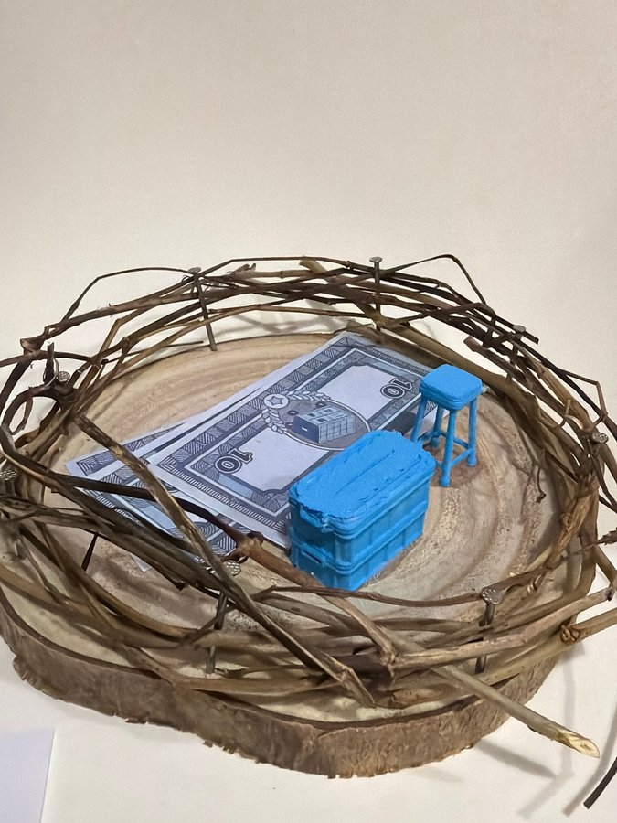

本網站為藝術科技項目之詮釋性預測（築巢 Weaving Home 藝術詮釋），並非心理／臨床診斷。


修正頂視圖將一組「四張拍賣活動使用的 $10」斜放喺左側，右下係淺藍色收納箱，右邊係淺藍色高凳。封面相只見到至少一張露出嘅藍灰色「10」紙鈔，其他可能被藍箱遮住；箱同高凳位置就大致吻合。三組物件集中喺木盤中央偏右，外圍枝圈保留大片空隙。
巢嘅頂視圖
修正頂視圖將一組「四張拍賣活動使用的 $10」斜放喺左側，右下係淺藍色收納箱，右邊係淺藍色高凳。封面相只見到至少一張露出嘅藍灰色「10」紙鈔，其他可能被藍箱遮住；箱同高凳位置就大致吻合。三組物件集中喺木盤中央偏右，外圍枝圈保留大片空隙。
屋企嘅人
一張高凳只提供單一座位，藍箱就似存放或搬運用品；但作品冇床、煮食設備或人物，無法確定係一人住、多人共用，定純粹係拍賣活動後嘅物件組合。藝術上可以想像有一位使用者暫時坐低，將要帶走嘅東西集中喺箱旁；呢個場景唔代表任何真實身份或居住狀態。
性格
藍箱同藍凳用同一鮮明色系，紙鈔就保留灰藍印刷，畫面有清楚嘅物件分組。粗糙枝圈、外露釘頭同厚身手造箱形成實用、直接嘅質感。藝術上可形容作品重視整理、可搬動性同色彩一致，但唔應由此斷言創作者節儉、流動或有某種固定性格。
動機
紙鈔、收納箱同高凳並置，似乎想將交換、保存同停留三個動作放入同一個巢。錢可以買物，箱可以裝物，凳就俾人暫坐；三者構成一個簡短流程。藝術動機可能係思考完成拍賣或選擇之後，乜嘢會被帶走、乜嘢留喺身邊，而唔係交代某人真實財務或搬遷情況。
需求
由可見功能推想，場景需要一個可集中收納嘅箱、一個體積細而可移動嘅座位，同一個平面放置活動紙鈔。枝條圍邊令細件唔容易跌出木盤，亦保留視線穿透。紙鈔數量喺修正圖有明確標示，但封面未能逐張核對，所以唔可以將「四張」延伸成任何資源充足或不足嘅判斷。
經歷
模型似一個活動結束後整理物件嘅瞬間：紙鈔仍然攤開，箱放喺上面或旁邊，高凳未被收起。藝術上可以讀成由選擇、交換到打包嘅過渡片段，亦可以只係幾件藍色模型嘅靜物安排。相片冇提供時間順序、人物口述或背景，因此唔能證明曾經搬家、拍賣所得或任何生活史。
證據摘要
| 物件 | 推論 |
|---|---|
| 露出嘅藍灰色「10」紙鈔 | 屬拍賣／交換價值符號；封面未能確認全部張數。 |
| 淺藍色厚身收納箱 | 外形支持收納或搬運意象，但內部不可見。 |
| 淺藍色四腳高凳 | 提供一個細小座位，亦可能只係家具模型。 |
| 物件集中喺木盤中央偏右 | 形成緊密組合，周邊木面相對留空。 |
| 多層枝圈同金屬釘 | 以手工方式建立低矮、通透邊界。 |
| 圓木切片年輪 | 為紙張同家具提供天然基底。 |
信心同限制
對藍箱、藍凳、至少一張紙鈔、枝圈同木底有中至高信心；對紙鈔總數只有低至中等信心。修正頂視圖標示四張，封面只見到部分，可能其餘被箱遮住，亦可能係圖示概括。本文所有人物、動機同經歷敘述均屬藝術性、非診斷推想，唔涉及真實身份或財務狀況。